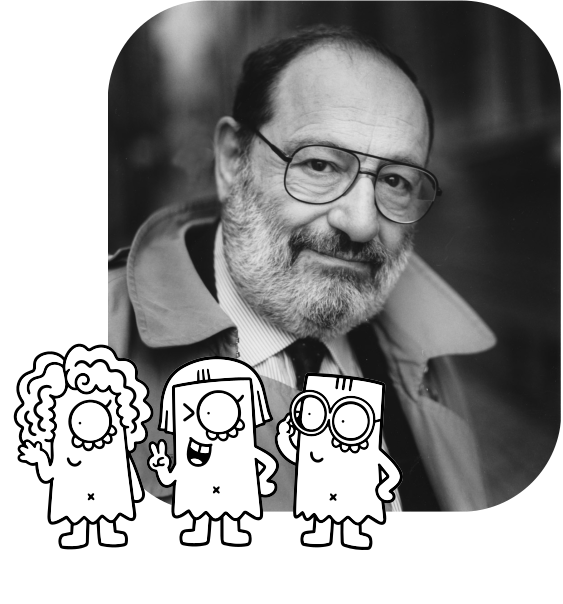
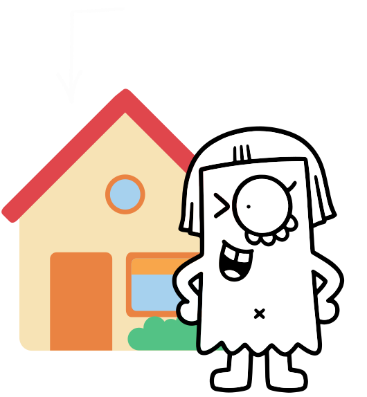
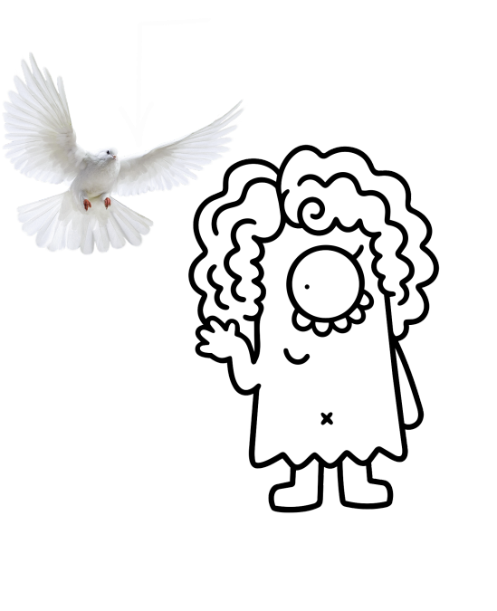
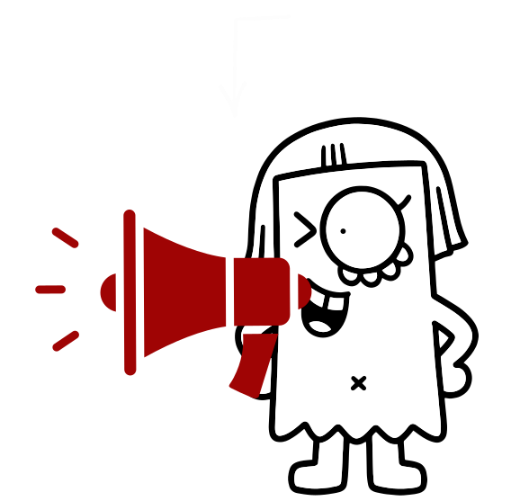
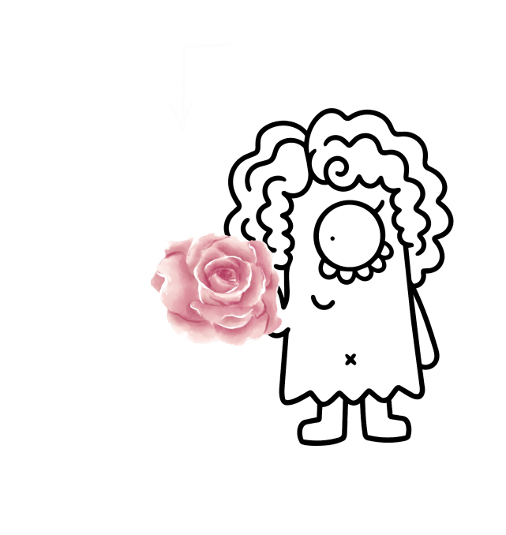
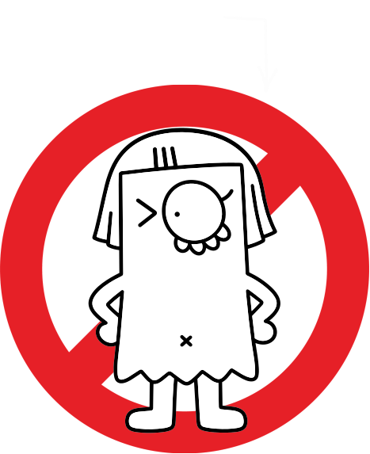

Definición:Estrategia o figura que el autor construye dentro de la obra para orientar al lector sobre cómo interpretarla.
Ejemplo:Un escritor usa un tono irónico y da pistas para que el lector entienda que no debe tomar literalmente lo que dice.

Definición:Sistema de reglas y convenciones que permite producir y comprender signos.
Ejemplo:El español es un código que permite entender palabras como "casa".

Definición:Capacidad del lector para utilizar sus conocimientos y códigos para interpretar correctamente una obra.
Ejemplo:Entender un meme porque conoces el contexto al que hace referencia.

Definición:Significado que un signo adquiere dentro de una cultura determinada.
Ejemplo:Vestir de negro puede asociarse con el luto en muchas culturas occidentales.

Definición:Proceso en el que el lector participa activamente completando e interpretando lo que la obra propone.
Ejemplo:Un cuento no explica todo y el lector deduce qué ocurrió.

Definición:Conjunto de conocimientos, experiencias y saberes culturales que posee una persona y utiliza para interpretar signos.
Ejemplo:Al ver una paloma blanca, la relacionas con la paz porque tienes ese conocimiento cultural.

Definición:Lector ideal que la obra presupone y que posee las competencias necesarias para interpretarla como fue prevista.
Ejemplo:Un libro de chistes sobre fútbol presupone un lector que conoce ese deporte.

Definición:Proceso mediante el cual se producen signos para comunicar o expresar algo.
Ejemplo:Un diseñador crea un logotipo que representa una marca.

Definición:Proceso continuo en el que un signo remite a otro signo, generando nuevas interpretaciones sin llegar necesariamente a un significado final absoluto.
Ejemplo:Una paloma → paz → tranquilidad → armonía → bienestar.

Definición:Disciplina que estudia los signos, sus sistemas, sus significados y cómo se producen e interpretan.
Ejemplo:Analizar qué comunica el color rojo en un anuncio.

Definición:Proceso mediante el cual un signo adquiere un significado dentro de un código y un contexto.
Ejemplo:La palabra "rosa" puede significar una flor según el contexto.

Definición:Algo que representa o remite a otra cosa y puede ser interpretado.
Ejemplo:Una señal de STOP representa prohibición.
